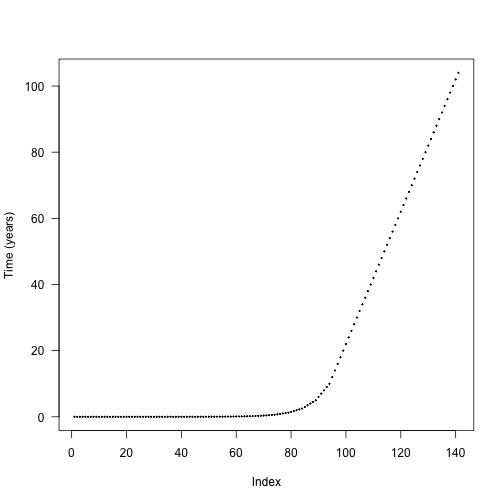
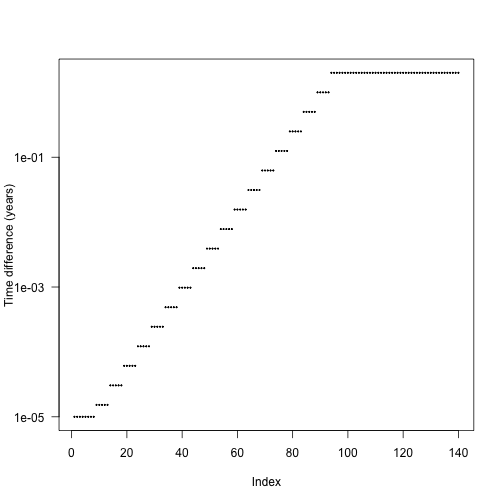
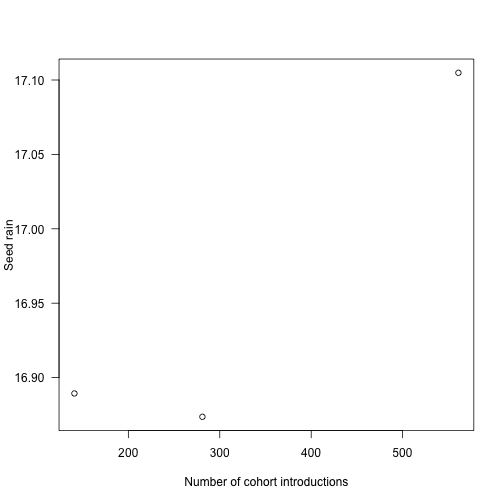
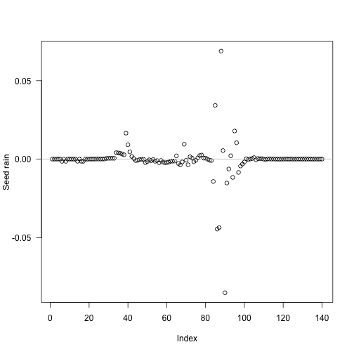
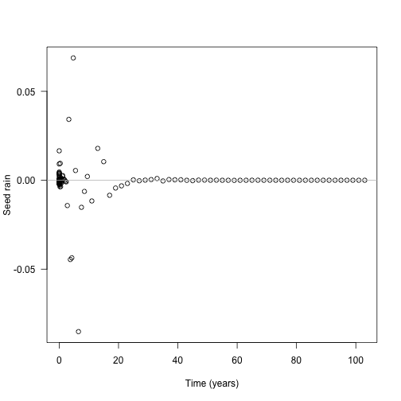
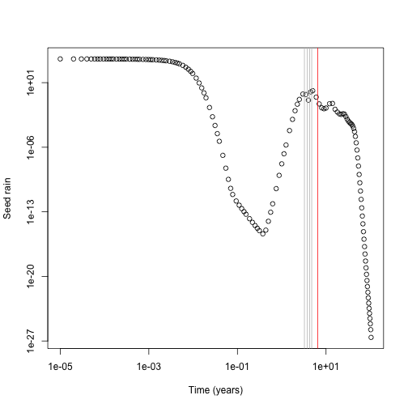
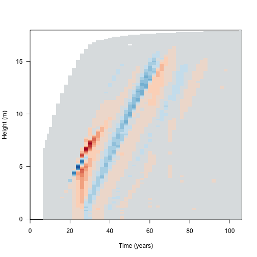
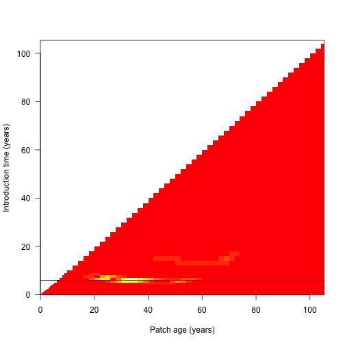
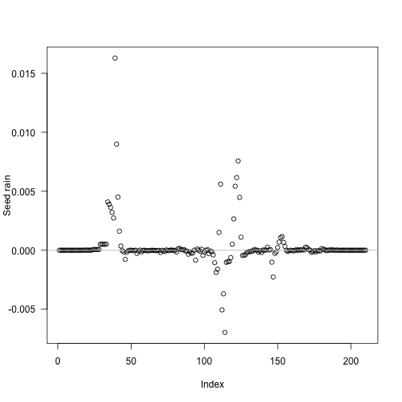
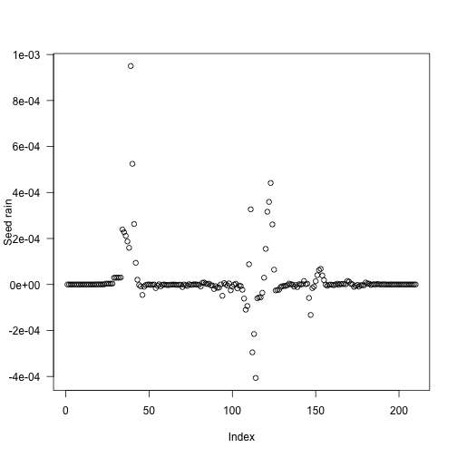

This vignette shows some details of cohort splitting. It’s probably not very interesting to most people, only those interested in knowing how the SCM technique works in detail. It also uses a lot of non-exported, non-documented functions from plant so you’ll see a lot of plant::: prefixes.
library(plant)
library(parallel)
p0 <- scm_base_parameters("FF16")
p <- expand_parameters(trait_matrix(0.0825, "lma"), p0, FALSE)
p$seed_rain <- 20 # close to equilibriumThe default cohort introduction times are designed to concentrate cohort introductions onto earlier times, based on empirical patterns of cohort refining:

The actual differences are stepped in order to increase the chance that cohorts from different species will be introduced at the same time and reduce the total amount of work being done.

We can create more refined schedules by interleaving points between these points:
interleave <- function(x) {
n <- length(x)
xp <- c(x[-n] + diff(x) / 2, NA)
c(rbind(x, xp))[- 2 * n]
}
t2 <- interleave(t1)
t3 <- interleave(t2)Consider running the SCM and computing seed rain at the end; this is one of the key outputs from the model so a reasonable one to look for differences in.
run_with_times <- function(p, t) {
p$cohort_schedule_times[[1]] <- t
run_scm(p)$seed_rains
}
sr_1 <- run_with_times(p, t1)
sr_2 <- run_with_times(p, t2)
sr_3 <- run_with_times(p, t3)Seed rain increases as cohorts are introduced more finely, though at a potentially saturating rate. We’re doing lots more work at the more refined end!
## [1] 16.88934 16.87365 17.10484The differences in seed rain are not actually that striking (perhaps 1%) but in some runs can be more, and the variation creates instabilities.
plot(c(length(t1), length(t2), length(t3)), sr,
las=1, xlab="Number of cohort introductions", ylab="Seed rain")
Where is the fitness difference coming from?
Consider adding a single additional cohort at one of the points along the first vector of times t1 and computing fitness:
insert_time <- function(i, x) {
j <- seq_len(i)
c(x[j], (x[i] + x[i+1])/2, x[-j])
}
run_with_insert <- function(i, p, t) {
run_with_times(p, insert_time(i, t))
}The internal function plant:::run_scm_error runs the SCM and computes errors as the integration proceeds; this helps shed some light.
i <- seq_len(length(t1) - 1)
res <- unlist(mclapply(i, run_with_insert, p, t1))
tm <- (t1[-1L] + t1[-length(t1)]) / 2The biggest deviations in output seed rain come about half way through the schedule:

Though because of the compression of early times it’s still fairly early:

Now look at the contribution of different cohorts to see rain (x axis log scaled for clarity). In this case almost all the contribution comes from early cohorts (this is essentially a single-age stand of pioneers). Overlaid on this are the five cohorts with the largest change in total fitness (biggest difference in red). The difference is not coming from seed rain contributions from those cohorts, which is basically zero, though it is higher than the surrounding cohorts.
plot(t1[-1], ebt$seed_rain_cohort(1)[-1], log="xy",
xlab="Time (years)", ylab="Seed rain")
j <- order(abs(res - sr_1), decreasing=TRUE)[1:5]
abline(v=tm[j], col=c("red", rep("grey", 4)))
Next up, need to work out what the fitness contribution of each cohort is.
dat1 <- run_scm_collect(p)
p2 <- p
p2$cohort_schedule_times[[1]] <- insert_time(j[[1]], t1)
dat2 <- run_scm_collect(p2)Then consider the light environment over time. This reconstructs the spline for the light environment for both runs, and computes canopy openness in both and computes the difference in light environments. The resulting image plot is blue in regions where the refined light environment is lighter (higher canopy openness) and red in regions where the the light environment is darker in the refined environment.
f <- function(e, h) {
i <- plant:::Interpolator()
i$init(e[, 1], e[, 2])
y <- rep(1, length(h))
j <- h < i$max
y[j] <- i$eval(h[j])
y
}
hmax <- max(dat1$light_env[[length(dat1$light_env)]][, "height"])
h <- seq(0, hmax, length.out=201)
y1 <- sapply(dat1$light_env, f, h)
y2 <- sapply(dat2$light_env, f, h)[, -(j[[1]] + 1L)]
dy <- t(y2 - y1)
dy[abs(dy) < 1e-10] <- NAColorBrewer’s RdBu
cols <- c("#B2182B", "#D6604D", "#F4A582", "#FDDBC7",
"#D1E5F0", "#92C5DE", "#4393C3", "#2166AC")
pal <- colorRampPalette(cols)(20)
image(dat1$time, h, dy, xlab="Time (years)", ylab="Height (m)", las=1,
col=pal)
Because the differences are mostly manifest in the leaf area, we monitor error in both the leaf area and in fitness for all cohorts: (black line indicates the cohort identified as problematic above)
dat <- plant:::run_scm_error(p)
image(dat1$time, dat1$time, dat$err$lai[[1]],
xlab="Patch age (years)", ylab="Introduction time (years)", las=1)
abline(h=t1[j[[1]]])
We then run through rounds of refining cohorts until estimated error has decreased down to an appropriate threshold:
Each round, the algorithm looks at the error in the leaf area calculations and in the fitness calculations and refines the worst cohorts, repeating as necessary.
t_refined <- p_refined$cohort_schedule_times[[1]]
i <- seq_len(length(t_refined) - 1)
res <- unlist(mclapply(i, run_with_insert, p_refined, t_refined))
tm <- (t1[-1L] + t1[-length(t1)]) / 2The problem cohorts are still in about the same place, but are much less pronounced (and less so if considering relative error)

